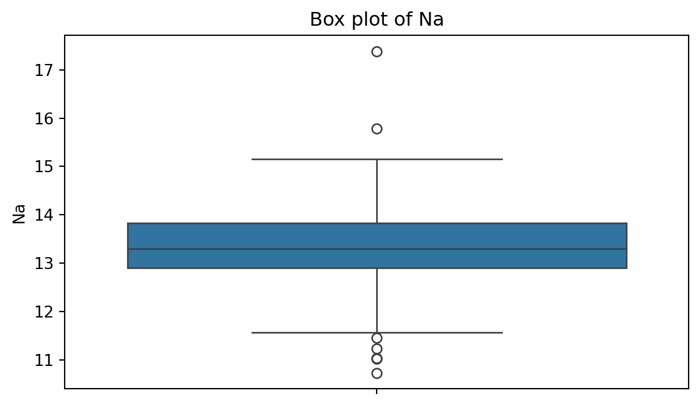

IN5148: Statistics and Data Science with Applications in Engineering
Alan R. Vazquez
Department of Industrial Engineering
Agenda
Review of data types and summary statistics
Data visualizations
Review of data types and summary statistics
Types of data I
When a numerical quantity designating how much or how many is assigned to each item in the sample, the resulting set of values is numerical or quantitative.
Height (in ft).
Weight (in lbs).
Age (in years).
Types of data II
When sample items are placed into categories and category names are assigned to the sample items, the data are categorical or qualitative.
Hair color.
Country of origin.
ZIP code.
Data types
Example 1
Let’s load the data in “penguins.xlsx”.
# Load pandas.import pandas as pd# Load the Excel file into a pandas DataFrame.penguins_data = pd.read_excel("penguins.xlsx")# Print the first 3 rows of the dataset.penguins_data.head(3)
species
island
bill_length_mm
bill_depth_mm
flipper_length_mm
body_mass_g
sex
year
0
Adelie
Torgersen
39.1
18.7
181.0
3750.0
male
2007
1
Adelie
Torgersen
39.5
17.4
186.0
3800.0
female
2007
2
Adelie
Torgersen
40.3
18.0
195.0
3250.0
female
2007
In Python, we check the type of each variable in a dataset using the function info().
Relative frequency: Number of observations in each category divided by the total.
Data visualizations
Example 2
A criminologist is developing a rule-based system to classify the types of glasses encountered in criminal investigations.
The data consist of 214 glass samples labeled as one of seven class categories.
There are nine predictors, including refractive index and percentages of eight elements: Na, Mg, AL, Is, K, Ca, Ba, and Fe. The response is the type of glass.
The dataset is in the file “glass.xlsx”. Let’s load it using pandas.
# Load the Excel file into a pandas DataFrame.glass_data = pd.read_excel("glass.xlsx")
The variable Type is categorical. So, let’s ensure Python knows this using the code below.
The matplotlib and seaborn libraries are pre-installed in Google Colab. However, we need to inform Google Colab that we want to use them and its functions using the following command:
import matplotlib.pyplot as pltimport seaborn as sns
Similar to pandas, the command as sns allows us to have a short name for seaborn. Similarly, we rename matplotlib as plt.
Histogram
Graphical display that gives an idea of the “shape” of the sample, indicating regions where sample points are concentrated and regions where they are sparse.
The bars of the histogram touch each other. A space indicates that there are no observations in that interval.
Histogram of Na
To create a histogram, we use the function histplot() from seabron.
Code
plt.figure(figsize=(7,4)) # Create space for figure.sns.histplot(data = glass_data, x ='Na') # Create the histogram.plt.title("Histogram of Na") # Plot title.plt.xlabel("Na") # X labelplt.show() # Display the plot
Box plot
A box plot is a graphic that presents the median, the first and third quartiles, and any “outliers” present in the sample.
The interquartile range (IQR) is the difference between the third quartile and the first quartile (\(Q_3 - Q_1\)). This is the distance needed to span the middle half of the data.
To create a boxplot, we use the function boxplot() from seabron.
Code
plt.figure(figsize=(7,4)) # Create space for the figure.sns.boxplot(data = glass_data, y ='Na') # Create boxplot.plt.title("Box plot of Na") # Add title.plt.show() # Show the plot.

Outliers
Outliers are points that are much larger or smaller than the rest of the sample points.
Outliers may be data entry errors or they may be points that really are different from the rest.
Outliers should not be deleted without considerable thought—sometimes calculations and analyses will be done with and without outliers and then compared.
Scatter plot
Data for which items consists of a pair of numeric values is called bivariate. The graphical summary for bivariate data is a scatterplot.
The variables \(X\) and \(Y\) are placed on the horizontal and vertical axes, respectively. Each point on the graph marks the position of a pair of values of \(X\) and \(Y\).
A scatterplot allows us to explore lineal and nonlinear relationships between two variables.
Scatter plot of Na versus RI
To create a scatter plot, we use the function scatter() from seabron. In this function, you must state the
Code
plt.figure(figsize=(7,4)) # Create space for the plot.sns.scatterplot(data = glass_data, x ='Na', y ='RI') # Show the plot.plt.title("Scatter plot of Na vs RI") # Set plot title.plt.xlabel("Na") # Set label for X axis.plt.ylabel("RI") # Set label for Y axis.plt.show() # Show plot.
Bar charts
Bar charts are commonly used to describe qualitative data classified into various categories based on sector, region, different time periods, or other such factors.
Different sectors, different regions, or different time periods are then labeled as specific categories.
A bar chart is constructed by creating categories that are represented by labeling each category and which are represented by intervals of equal length on a horizontal axis.
The count or frequency within the corresponding category is represented by a bar of height proportional to the frequency.
We create the bar chart using the function countplot() from seaborn.
Code
# Create plot.plt.figure(figsize=(7,4)) # Create space for the plot.sns.countplot(data = glass_data, x ='Type') # Show the plot.plt.title("Bar chart of Type of Glasses") # Set plot title.plt.ylabel("Frequency") # Set label for Y axis.plt.show() # Show plot.
Saving plots
We save a figure using the save.fig function from matplotlib. The dpi argument of this function sets the resolution of the image. The higher the dpi, the better the resolution.
plt.figure(figsize=(5, 7))sns.countplot(data = glass_data, x ='Type')plt.title('Frequency of Each Category')plt.ylabel('Frequency')plt.xlabel('Category')plt.savefig('bar_chart.png',dpi=300)
Improving the figure
We can also use other functions to improve the aspect of the figure:
plt.title(fontsize): Font size of the title.
plt.ylabel(fontsize): Font size of y axis title.
plt.xlabel(fontsize): Font size of x axis title.
plt.yticks(fontsize): Font size of the y axis labels.
plt.xticks(fontsize): Font size of the x axis labels.
plt.figure(figsize=(5, 5))sns.countplot(data = glass_data, x ='Type')plt.title('Relative Frequency of Each Category', fontsize =12)plt.ylabel('Relative Frequency', fontsize =12)plt.xlabel('Category', fontsize =15)plt.xticks(fontsize =12)plt.yticks(fontsize =12)plt.savefig('bar_chart.png',dpi=300)